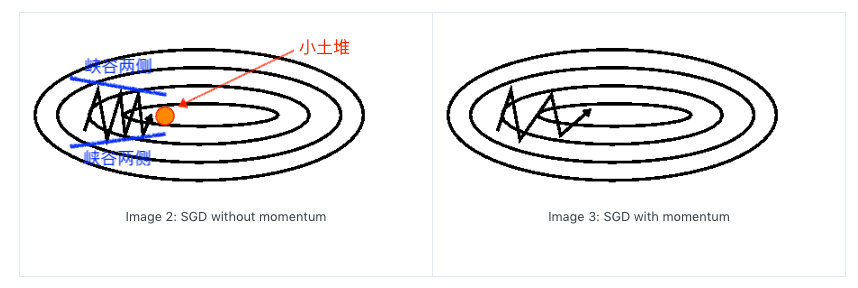
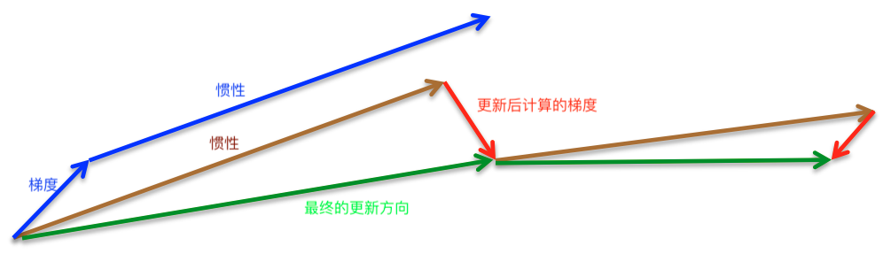

瓦砾准备写一个关于优化器算法的系列，主要面向总是把优化器当做黑盒使用的，或是对优化器算法有些遗忘的读者。希望大家在看完这个系列后，能达成以下几点成就：
- 对深度学习优化器的进化史，有一个系统的了解；
- 对应不同的任务，知道应选用哪种优化器；
- 能够理解每种优化器参数的意义；
- 能够根据自己的需求，在PyTorch上做一些自定义的优化器的改动。
Gradient Descent
1. 梯度下降的三种变体
梯度下降有三种变体：
- 批梯度下降 BGD (Batch gradient descent)
- 随机梯度下降 SGD (Stochastic gradient descent)
- 小批梯度下降 MBGD (Mini-batch gradient descent)
a. Batch gradient descent (BGD)
批梯度下降（Batch gradient descent，又称之为Vanilla gradient descent），顾名思义是用全部的数据样本计算平均loss之后，再得到梯度进行下降：
其中$\theta$为模型参数，$\triangledown_\theta J(\theta)$为各个参数的梯度，$\eta$为学习率。但是BGD有两个最大的问题：
- 容易陷入局部最优点和鞍点。
- 遍历整个数据集才走一步，这样太耗时，且由于内存的原因，对于较大数据量的几乎不可能实现。
b. Stochastic gradient descent (SGD)
随机梯度下降则是另一个极端，每个样本都会计算loss、梯度，然后更新：
SGD完美解决了上面的两点问题，并且可以用来online-learning，但是，SGD做了很多冗余的计算，且不会很快收敛，容易震荡。
c. Mini-batch gradient descent (MBGD)
MBGD是BGD和SGD的这种，每次取m个样本，计算平均loss、梯度，然后更新：
MBGD避开了前两种的缺点，并且：
- 减少参数的更新次数，使用更新更稳定；
- 充分利用gpu的并行计算，提高计算效率。
一般情况，若无特殊说明，SGD优化器指的就是MBGD的方法。（更细节的讲BGD和SGD的优劣的可以看 @袁洋 大佬的这篇：https://zhuanlan.zhihu.com/p/27609238，私以为讲的很好）
2. 挑战
梯度下降是所有深度学习优化器的基础。但是想要明白为什么需要优化SGD，首先我们得知道Vanilla SGD优化器面临的挑战：
- 对于SGD来说，挑选一个学习率（固定）是很很困难的。选小了，收敛太慢；选大了，阻碍收敛甚至容易发散。
- 如果我们想用Learning rate schedule的方式，随着epoch数去减小学习率（lr退火），也只能用一个事先定义好方式去annealing，不能根据当前batch数据的特点去动态的decay。
- 所有的参数都用的是一个学习率，不能自适应地调节。
- 最重要的一个问题是：由于SGD更新的参数仅由学习率和当前batch的梯度决定，模型很容易陷入次优点和鞍点。
下面我们看看后续的改进都是如何一步步优化我们这里提到的四点挑战的。
SGD优化器的几点优化
我们先看看在基于SGD的梯度更新上的两点改动：
- Momentum
- Nesterov accelerated gradient
1. Momentum动量
按吴恩达老师所说的，梯度下降（Gradient Descent）就好比下山，目标则是以最快的速度抵达山下。想象我们的SGD优化器“小明”一路披荆斩棘来到一个峡谷，左右两边极其陡峭，前面有个小土堆，后面是刚刚下山的路，此时根据模型计算的梯度方向，非左即右，“小明”就只能懵逼地左右来回的跑，怎么也无法跨过前面的小土堆了（也就是挑战4的次优点问题）。那么有什么办法让“小明”记住刚刚下山的方向，面向小土堆，跨过它继续下山呢？
一个最简单的Intuition就是我们把“小明”搓成一个球，让他滚下山坡，这样他就保持了一定的惯性，可以顺利的滚过小土堆了。因此1964年，Polyak提出了Momentum动量这个概念，公式如下：
深度学习中，$\gamma$一般设置为0.9（或者0.99，更严谨的选择参考L. Vandenberghe的EE236C的课件，这里不展开了）。其实就是在下降的时候不仅考虑当前batch计算的梯度，也考虑到之前实际下降的梯度，从而跨过局部最优。

此外，动量的存在还可以扩大可收敛的学习率范围，缓解挑战1的问题，并加速模型收敛的速度。
当然，这里的解释只是为了帮助理解，并不严谨，感兴趣的同学可以看Gabriel的这篇Why Momentum Really Works，讲的很详细，还有有趣的可视化插件可以玩（可以对比一下有无Momentum模型下降的节奏）。2333。
2. Nesterov accelerated gradient (NAG)
细心的读者可能已经发现了上面的参数更新的一个很大的“bug”，实际上梯度则是根据$\theta$算出来的，然而参数是在$\theta-\gamma v_{t-1}$的基础上更新的，这跟我们SGD的“搁哪算，搁哪降”的原则就相违背了。因此，Nesterov在1983年提出了NAG，让模型先预见性地往前走完惯性导致的一步，再根据当前点计算真实的梯度，再更新。

Ilya Sutskever在2013年的博士论文Training Recurrent Neural Networks 中给了更多的细节。
3. PyTorch实现
PyTorch官方的实现：https://github.com/fyubang/pytorch_optimizers
核心代码：
1 | for p in group['params']: |
a. Momentum
这里要注意，PyTorch官方的Momentum实现在Sutskever的公式上做了一点优化：
当学习率固定时，两种更新方法是等价的(issue 1099，读者可以令$v_0=0$自己推导一下，很简单)，但是如果学习率是会随着step衰减的话，PyTorch的实现的Momentum可以立即随之衰减，而原来的实现需要较长的时间才能衰减到正常的水平。
b. NAG
用数学公式表示NAG的思想是非常简单且严谨的，然而在计算框架上要如何实现呢？PyTorch的框架是自动求导的，也就意味着：我们在forward之前就必须把参数走完动量的那一步从而得到$\theta’$，并只维护这一个参数，那么更新公式变为：
抹掉$\theta$参数，就可以得到：
这样我们就能把PyTorch的代码和NAG的更新公式统一了。虽然最后得到的是“多跨了一步动量”的参数，但是由于到最后靠近极值点的时候动量已经很小了，所以有一点误差也并无大碍。
我们现在已经能一定程度上缓解挑战1和挑战4的问题了，但是我们还是希望能针对不同参数用不同的更新幅度，该如何实现呢？
下一章，我们介绍一些在SGD的变体：Adagrad、Adadelta、RMSprop等。
Reference:
- Polyak, B.T. (1964) Some methods of speeding up the convergence of iteration methods
- Nesterov, Y. (1983) A Method for Solving a Convex Programming Problem with Convergence Rate O(1/K2)
- Sutskever, I. (2013) Training Recurrent neural Networks. PhD Thesis.
- Sutskever, I. (2013) On the importance of initialization and momentum in deep learning
- Hinton, G. (2014) Neural Networks for Machine Learning—-Lecture 6a Overview of mini-batch gradient descent
- Ruder, S. (2018) An overview of gradient descent optimization algorithms